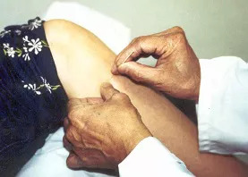

Medicina Tradicional Chinesa & Kung Fu
Por Thomas Pinheiro
Inicialmente vamos falar sobre os conceitos de Yin e Yang. Estes conceitos significam extremos, o Yin seria o negativo (exemplificando: menor, filha, mãe) e o Yang; o positivo (exemplificando: maior, filho, pai) em suma, o contrário; porém não há nada absoluto Yin ou Yang, dentro de um se encontra o outro, e vice versa. Um exemplo: a mãe é Yin, mas a relação dela com o filho se torna Yang. O pai é Yang, a filha Yin, neta vira Yin e Yang. Este sistema de conceito é só para explicar a situação, o fenômeno no Universo.
A Medicina Chinesa utiliza o conceito de Yin e Yang como explicação do fenômeno da doença, analisando o grupo, a base, o fenômeno. Para facilitar o entendimento, vamos exemplificar: uma pessoa sente febre, sua batida do pulso é forte, considera-se Yang, a pessoa fraca, pulso fraco, pálida, que não sente vontade, sente-se fria, considera-se Yin. Isto permite a classificação do grupo de doença em Yin e Yang. Wushin significa cinco elementos de que o mundo foi feito: madeira, água, fogo, terra e metal. Estes elementos são utilizados para se analizar detalhadamente a doença, como qual orgão é afetado em seu funcionamento.
Exemplos:
Madeira: ligando com fígado, que se liga com tendão, nervos. Fogo: ligando com coração, com sangue. Terra: ligando com baço, ligando com carne, músculo. Metal: ligando com pulmão, que controla ou liga com pele, pêlo. Água: ligando ao rim, que controla osso, medula espinal. Os órgãos aos quais são mencionados não correspondem exatamente a anatomia conhecida no ocidente. Para a teoria da medicina tradicional chinesa, é a experiência acumulada da função do organismo, não exatamente o órgão.
Eles são individuais e ao mesmo tempo dependentes um do outro, formando um ciclo de equilíbrio. A teoria do Yin e Yang resume esta idéia de equilíbrio do funcionamento do organismo. Toda esta teoria foi feita há mais de dois mil anos e fora toda ela registrada por escrito. Utilizando-se este princípio analisa-se todo tipo de doença, a raiz da doença; não se trabalha com o sintoma, pois cada doença pode ser a mesma, mas o organismo do indivíduo difere de um para outro.
Definindo inicialmente a doença no que seja Yin ou Yang, o tratamento não é igual ao indivíduo que é Yin e ao que é Yang, se utilizar, por exemplo, o mesmo tipo de erva para ambos, pode trazer um resultado de piora ao estado de saúde do indivíduo. Não se leva em conta o sintoma, mas a qualidade do organismo, o uso dos cinco elementos para analizar a condição do funcionamento do organismo do paciente. Exemplificando: o coração é expresso como fogo, fogo demais tem de baixar, pode acrescer água, ou seja, trabalhar o funcionamento do rim.
Analisando pelo funcionamento do órgão e decidindo o método mais adequado para se reequilibrar dentro dos cinco elementos, utilizando-se então de ervas naturais, minerais, animais, insetos, acupuntura, massagem, treino do corpo, treinamento de meditação, chi kung e artes marciais.
A mesma teoria do Yin e Yang posteriormente foi aproveitada pelos mestres de artes marciais para explicar a posição de forma do corpo, por exemplo: em baixo, Yin, em cima, Yang. Aparece o significado de um movimento e ao mesmo tempo um movimento escondido. Exemplos Yin, atrás, em baixo, absorver, dentro, apoiar. Yang, frente, em cima, soltar, fora, fundar. Estes elementos estão sempre alternando. Wushin para quem pratica significa direção, direções (madeira direção oeste, fogo direção sul, terra direção centro, leste direção metal, norte direção água).
Essa teoria aplica-se para treino para estilo interno ou externo, concluindo, procura-se o equilíbrio. Os mestres de arte marcial costumam, além de seu aprendizado para combate, ligar-se com a medicina chinesa tradicional e a maioria acaba herdando estes conhecimentos de mestres anteriores a respeito de cura, tratamento para recuperação de torções, batidas, lesões, utilizando ervas, acupuntura, e massagem.
Formas de Tratamento:
A utilização das ervas naturais como objeto de uso para tratamento na medicina oriental também possuem uma classificação: Hon: fraco, frio. Yi: forte, forte em excesso, quente. Tchou: seca. Sup: umidade. Poou: energizante.
Conforme a situação do organismo se aplica estes tipos de substâncias para equilibrar a função do organismo, garantindo assim um funcionamento normal. São utilizados os meridianos, pontos vitais de energia como também a classificação destes como Yin ou Yang, que cobrem o corpo todo, mantendo o organismo interligado (tanto interiormente como superficialmente).
Utilizando-se de agulhas, moxabustão (pequeno bastão feito de erva artemísia de que se mantém aceso, propagando efeito pelo calor emanado e propriedades da erva), tui na (massagem chinesa), e ventosas (variedade de copos que produzem sucção). Outra alternativa se encontra em treinos corporais, através da prática do kung fu, chi kung, etc... Muito recomendados hoje em dia para o combate de doenças crônicas geradas pelo desgaste da rotina do dia a dia; como o stress, pressão alta, problemas posturais de coluna, tendinite e outros.